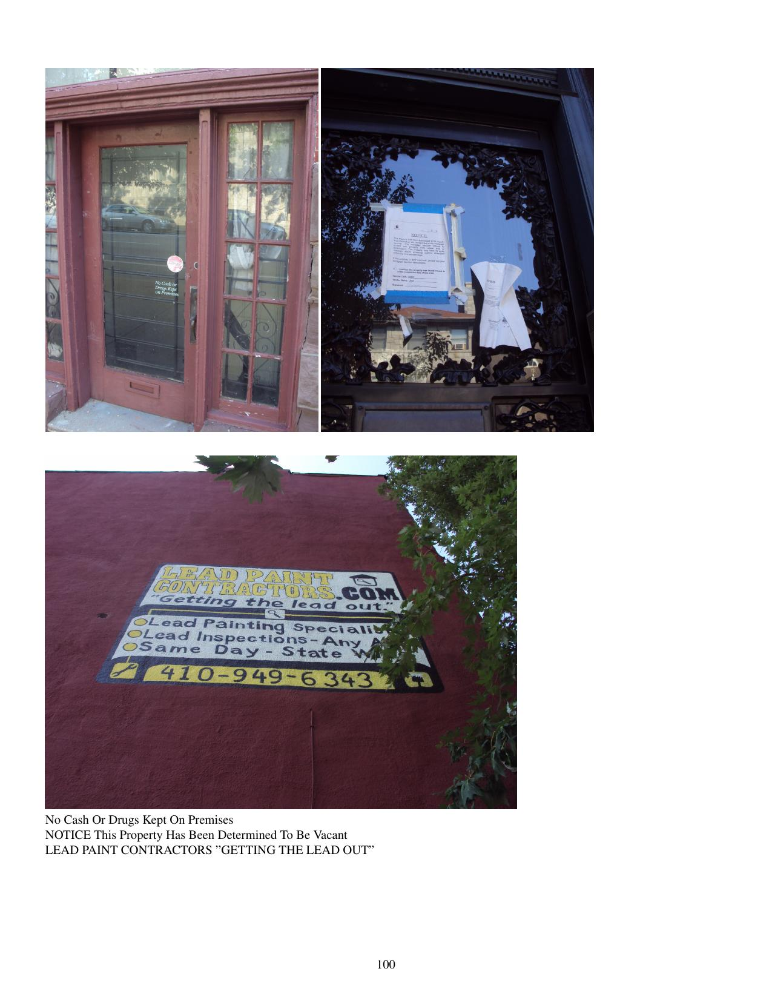

City That Reads: Baltimore Signs and Markings Volume 6
Patrick Swickard
8.5"x11" paperback, 180 pages
I like to pass on
The feeling of great joy I found in Eckankar
For those who have ears to hear
For I, too, have had
A longing deep inside, never knowing where to hide
For one day up, the next day down
No longer am I tied to this earth world
Its troubles are old
I have no fear of death no more
Since on the path of Eck
Greater is he that moveth his own spirit
Than taketh a city for inner rulership
Is the mastery of the masters
This, too, can be yours
- Sri Darwin Gross
Side streets of Mount Vernon. Freight trains and light rail and subways. Mount Royal Tavern. Geico graves. Coco Chanel's soup tureen. Mondawmin and Druid Hill area. Zoo signs. Woodberry. More scenes from Mount Royal Tavern. Old newspapers and free shoes. Eckankar and karate in Old Goucher.
Includes:
Random sample page:
